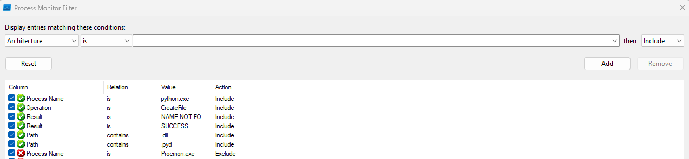
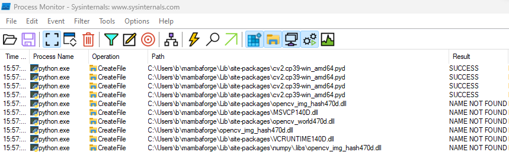
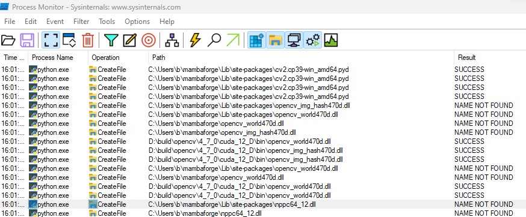

import os
os.add_dll_directory("D:\\build\\opencv\\4_7_0\\cuda_12_D\\bin")
import cv2ImportError: DLL load failed while importing cv2: The specified module could not be found.If your on Windows using python >= 3.8 having built OpenCV >= 4.6 from source and your seeing the above error when calling import cv2, this short guide should help solve your problem.
The guide assumes that you have either installed the python bindings during the build process (not recommended) or manually copied cv2.cp3x-win_amd64.pyd to your distributions site-packages directory (e.g. C:\Users\<USER>\mambaforge\Lib\site-packages).
So what’s the issue? Although the message is quite explicit regarding the cause, it doesn’t really help with finding a solution. In a nutshell python has found cv2.cp3x-win_amd64.pyd, tried and then failed to load it because a it can’t find a dependant shared library. Now the advice I have seen online regarding this is to dig out trusty dependancy walker, load the cv2.cp3x-win_amd64.pyd and see which dependencies the system can’t find.
Now this is solid advice if we had a C++ application and/or we were using python < 3.8 (which uses the system/user path for dll resolution), however we are not, so even if dependency walker can’t detect any problems we may still be facing the above error.
The good news is there is an easy fix if you know where the missing DLL’s are and only slightly more involved if you don’t as long as you have access to the missing DLL’s on your system.
To demonstrate the fix, I have built the OpenCV shared library and corresponding python bindings and manually copied them to the site-packages directory inside my python distribution (C:\Users\b\mambaforge\Lib\site-packages).
As I have built a shared library the python bindings are dependant on opencv_world470.dll and I haven’t told python where they are I get the error shown below whenn trying to import them.
Given that I know the path to OpenCV’s shared libraries is required and I haven’t told python about it, the first thing to try is to add it to pythons DLL search path and see if that solves the problem.
ImportError: DLL load failed while importing cv2: The specified module could not be found.Ahh the same error, what’s going on.
In this case I also built OpenCV against the CUDA SDK so there is a good chance its missing DLL’s from there aswell. I can try to fix the issue by simply adding the location of the CUDA SDK binaries to the python DLL search path as shown below.
This appears to have solved the issue, but its a good idea to examine the build information just to double check I have loaded the right version of OpenCV.
General configuration for OpenCV 4.7.0 =====================================
Version control: 4.7.0
Extra modules:
Location (extra): D:/repos/opencv/contrib/modules
Version control (extra): 4.7.0
Platform:
Timestamp: 2023-01-31T15:00:40Z
Host: Windows 10.0.22621 AMD64
CMake: 3.25.1
CMake generator: Ninja
CMake build tool: D:/bin/ninja/ninja.exe
MSVC: 1934
Configuration: Debug
CPU/HW features:
Baseline: SSE SSE2 SSE3
...That was easy but what can I do if I’m not as good at guessing what’s missing. Next I will use the same example again to demonstrate how to find out which DLL’s python is searching for.
To find which DLL’s are missing we can use process monitor which will enable us to see the names of the DLL’s which python is trying to load.
Process monitor by default has produces a significant amount of output so it is a good idea to filter out as much of this noise as you can. To do this you can either load this filter (as suggested by LaurentBerger) with “File->Import Configuration”, or manually add the filter entries on the “Process Monitor Filter” window, which is opened by default every time you launch the application, details below.
Since we only want to view shared libaries which are accessed by the python.exe process, we can add the following filters to make our lives easier
Your filter should now resemble the below.

Before continuing it is advisable to close any other python proceses as the output from these will pollute the main window.
Now start python and before typing import cv2, press the clear button (red trash can) in process monitor to clear any output generated during python’s initialization.
ImportError: DLL load failed while importing cv2: The specified module could not be found.
Because I have reset the python DLL search path on running import cv2 I get the above output in process monitor which shows that we successfully found cv2.cp3x-win_amd64.pyd (otherwise we would see the “ModuleNotFoundError: No module named ‘cv2’” error) however it also shows several attempts have been made to locate opencv_img_hash_470.dll and opencv_world470.dll without success.
As before we add the directory containing these to the python DLL search path.
ImportError: DLL load failed while importing cv2: The specified module could not be found.
Now process monitor shows that opencv_img_hash_470.dll and opencv_world470.dll were located successfully after a few attempts however we are missing nppc64_12.dll which is part of the CUDA SDK. As before if we add the CUDA SDK binary directory to the python DLL search path the call to import cv2 will be successful. If however we were still seeing the same error we could simply repeat the process, that is examine the output in process monitor and add the directories containing the missing DLL’s to the python DLL search path.